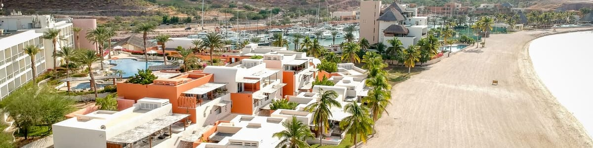

<!DOCTYPE html>
<html lang="es">
  <head></head>
  <meta charset="UTF-8"/>
  <meta name="viewport" content="width=device-width, initial-scale=1, shrink-to-fit=no"/>
  <title>Costabaja Resort, Marina &amp; Spa</title>
  <meta name="description" content="Costabaja Resort, Marina &amp; Spa"/>
  <link rel="stylesheet" href="https://maxcdn.bootstrapcdn.com/font-awesome/4.7.0/css/font-awesome.min.css"/>
  <link rel="stylesheet" href="https://maxcdn.bootstrapcdn.com/bootstrap/4.0.0/css/bootstrap.min.css" integrity="sha384-Gn5384xqQ1aoWXA+058RXPxPg6fy4IWvTNh0E263XmFcJlSAwiGgFAW/dAiS6JXm" crossorigin="anonymous"/>
  <link rel="stylesheet" href="app/app.css"/>
  <link href="https://fonts.googleapis.com/css?family=PT+Sans+Narrow:400,700" rel="stylesheet"/>
  <link rel="icon" type="image/x-icon" href="favicon.ico"/>
  <link rel="icon" type="image/png" href="favicon.png"/>
</html>
<body data-spy="scroll" data-target=".navbar" data-offset="80">
  <header>
    <nav class="navbar bg-light navbar-expand-xl fixed-top">
      <div class="container"><a class="navbar-brand smooth-scroll" href="index.html"></a>
        <button class="navbar-toggler" type="button" data-toggle="collapse" data-target="#mainNav"><span class="fa fa-bars"></span></button>
        <div class="collapse navbar-collapse justify-content-end" id="mainNav">
          <ul class="navbar-nav">
            <li class="nav-item"><a class="nav-link" href="servicios-y-amenidades.html">Servicios y amenidades</a></li>
            <li class="nav-item"><a class="nav-link" href="reserve-un-slip.html">Reserve un Slip</a></li>
            <li class="nav-item"><a class="nav-link" href="renta-de-yates.html">Renta de Yates</a></li>
            <li class="nav-item"><a class="nav-link" href="costabaja-resort-spa.html">CostaBaja Resort &amp; Spa</a></li>
            <li class="nav-item"><a class="nav-link" href="que-hacer-en-la-paz.html">Qué hacer en La Paz</a></li>
            <li class="nav-item"><a class="nav-link" href="contacto.html">Contacto</a></li>
          </ul>
        </div>
      </div>
      <!--include modulos/_reserva-->
    </nav>
  </header>
  <section id="banner">
    <div class="carousel slide" data-ride="carousel" id="bannerSlide">
      <div class="carousel-inner">
        <div class="carousel-item active"></div>
      </div>
    </div>
  </section>
  <section class="section">
    <div class="container">
      <div class="row justify-content-center">
        <div class="col text-center">
          <h2>Qué hacer en La Paz</h2>
        </div>
      </div>
      <div class="row justify-content-center">
        <div class="col-md-12">
          <p><strong>Escápese a La Paz</strong>, dé un paseo por el malecón y disfrute del romántico atardecer. Deléitese con la comida regional . Explore museos históricos o compre tradicionales artesanías mexicanas. Experimente la legendaria pesca de marlin, wahoo, atún, dorado y más. Practique snorkel con amistosos lobos de mar o bucee con tiburones martillo y manta rayas gigantes. Practique kayak acompañado de delfines y ballenas o aventúrese en las tranquilas bahías de la Isla Espíritu Santo. Descubra ancestrales pinturas rupestres. Relájese en las infinitas playas de arena blanca. Póngase en contacto con su yo interior. Todo esto le está esperando en La Paz, Baja California Sur, México.</p>
        </div>
      </div>
      <div class="row justify-content-center mt-5">
        <div class="col-md-6">
          <div class="min-height-bg300" style="background-image: url(app/img/la-paz-1.jpg)"></div>
        </div>
        <div class="col-md-6">
          <p>El malecón corre a lo largo de la ciudad en La Paz y ofrece una variedad de tiendas, restaurantes, museos, galerías, bares, servicios turísticos y mucho más… </p>
          <p>Nade con los leones marinos en las claras aguas de la Isla del Espíritu santo. Disfrute snorkelear y jugar con los cachorros, reme en kayak hacia hermosas playas vírgenes y disfrute la tranquilidad de la abundante vida marítima.</p>
          <p>Un paraíso natural donde el mar se encuentra con la Sierra Laguna; localizada en la península de Baja California es sitio de varios ecosistemas. En diciembre podrá avistar ballenas en su paso migratorio por la costa. Al llegar en automóvil, visite Todos Santos, un oasis de palmeras y árboles de frutales. Todos los Santos atraen aficionados de la playa, observadores de aves, apasionados del medio ambiente, buzos, pescadores, artistas, y mucho más.</p>
        </div>
      </div>
      <div class="row justify-content-center mt-5">
        <div class="col-md-6">
          <ul>
            <li>Avistamiento de ballenas en Bahía Magdalena.</li>
            <li>Snorkel y kayak en aguas tranquilas.</li>
            <li>Visite el museo histórico de Nuestra señora del Pilar en La Paz.</li>
            <li>Cabalgue en el desierto y descubra el Cardón, el cactus más grande del mundo.</li>
            <li>Innumerables oportunidades de ecoturismo.</li>
            <li>Vela y surf de vela en Los Barriles; disfrute los vientos de invierno para recorrer el mar entre playas arenosas.</li>
            <li>Todos Santos, un destino para surfistas con hospitalarias calles llenas de galerías de arte.</li>
            <li>Jacques Costeau, famoso buzo y documentalista, llamó al Mar de Cortés 'El Acuario del Mundo'.</li>
            <li>Más de 4,000 plantas florecen en los ecosistemas cercanos; coyotes, zorros y borregos cimarrones habitan las abundantes tierras.</li>
            <li>Las playas Punta Coyote y San Evaristo ofrecen excelentes experiencias de campismo donde verá lagartijas y correcaminos cruzar el paisaje.</li>
          </ul>
        </div>
        <div class="col-md-6">
          <div class="min-height-bg300" style="background-image: url(app/img/la-paz-2.jpg)"></div>
        </div>
      </div>
      <p class="mt-5"><strong>Marina CostaBaja</strong> se encuentra en el Mar de Cortés, notorio por ofrecer la mejor pesca deportiva del mundo. Localizado en La Paz, que es también conocida por ser una de las ciudades más seguras de México. Le invitamos a visitarnos y disfrutar todo lo que La Paz y su cálida hospitalidad latina tienen que ofrecer.</p>
    </div>
  </section>
  <!--include modulos/_legales  -->
  <footer>
    <div class="container">
      <div class="text-right"></div>
    </div>
    <div class="bluemx mt-3">
      <div class="text-center"><a href="http://www.bluepureloyalty.com/" target="_blank">
          <div>blue.mx</div></a></div>
    </div>
  </footer>
  <script src="https://code.jquery.com/jquery-3.2.1.min.js" crossorigin="anonymous"></script>
  <script src="https://cdnjs.cloudflare.com/ajax/libs/popper.js/1.12.9/umd/popper.min.js" integrity="sha384-ApNbgh9B+Y1QKtv3Rn7W3mgPxhU9K/ScQsAP7hUibX39j7fakFPskvXusvfa0b4Q" crossorigin="anonymous"></script>
  <script src="https://maxcdn.bootstrapcdn.com/bootstrap/4.0.0/js/bootstrap.min.js" integrity="sha384-JZR6Spejh4U02d8jOt6vLEHfe/JQGiRRSQQxSfFWpi1MquVdAyjUar5+76PVCmYl" crossorigin="anonymous"></script>
  <script src="app/app.js"></script>
</body>